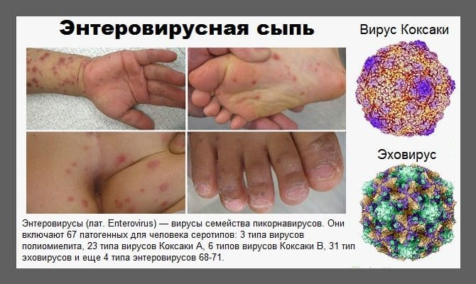
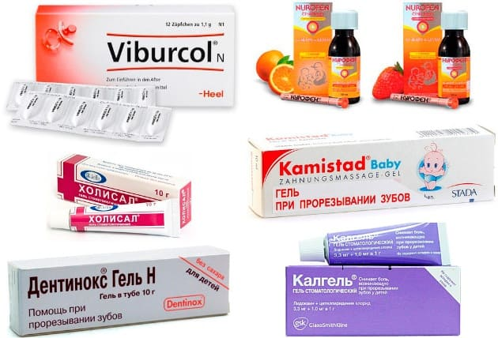
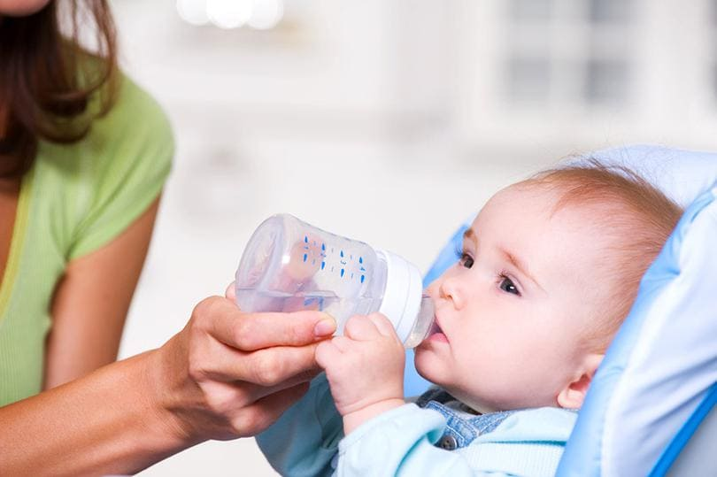
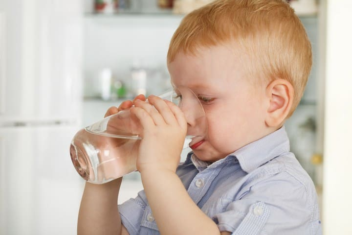

Эти инфекционные (заразные) заболевания регистрируются круглогодично, но с момента наступления летней жары и до первых заморозков дети с энтеро-вирусными экзантемами бывают у педиатра особенно часто. Эти болезни распространены на всех широтах, но особенно часто встречаются на юге; их смело можно считать бичом курортных отелей. Из отпуска с моря порой возвращаются с типичной сыпью одновременно все члены семьи.

К энтеровирусным экзантемам/энантемам относятся в основном две главные формы болезни: болезнь «рука – нога – рот» (она же энтеровирусная пузырчатка, она же турецкая ветрянка) и герпангина (правильнее называть – энтеровирусный фарингит, поскольку к вирусу герпеса это заболевание отношения не имеет, но исторически прилипло это название).
При герпангине типичная афтозная сыпь (белые язвочки по 1–5 мм в диаметре) развивается только на небных дужках, реже и в ротовой полости. При болезни «рука – нога – рот» сыпь возникает как на небных дужках, так и на языке, внутренней поверхности щек, вокруг рта, на ладонях и подошвах. Сыпь на коже может напоминать ветрянку (красные пятна/папулы и/или полноценные водянистые пузырьки). Сыпь во рту может напоминать герпетический стоматит (важно их не спутать, потому что герпетический стоматит лечится ацикловиром, а энтеровирусный – нет).
Что же делать родителям?
Только:
1) облегчать самочувствие, снимать боль;

2) следить за обезвоживанием, предотвращать его;

3) следить за осложнениями, вовремя обращаться с ними к врачу.
Заболевшего ребенка беспокоят жар и боль в горле. Лихорадка до 39 °C держится в первые 1–4 дня, затем температура тела самостоятельно приходит в норму. Боль при глотании сохраняется 1–6 дней, иногда настолько сильная, что ребенок отказывается глотать слюну, постоянно сплевывает ее. Кожные элементы сыпи легко нагнаиваются (чаще всего это происходит около рта) и переходят в классическое импетиго.
Специфического лечения нет. Это самопроходящая болезнь, поэтому что ни назначай, она пройдет в обычные для нее сроки – за 3–7 дней. Иногда педиатры из-за недостаточных знаний о лечении этой инфекции назначают антибиотики, противовирусные, сорбенты, антигистаминные и т. д., но все это не имеет никакого эффекта, кроме побочного, и не рекомендуется современными клиническими руководствами.
По пунктам:
1) Обезболить. Ибупрофен или парацетамол в первые дни болезни лучше давать курсом, каждые 6–8 часов, вне зависимости от высоты лихорадки. Это снимет недомогание, притупит боль при глотании и облегчит ребенку самочувствие.
2) Поить, поить и еще раз поить. Обезвоживание при этих болезнях развивается из-за того, что: а) ребенок сильно потеет при лихорадке и б) ребенок мало пьет, потому что боится глотать из-за боли в горле. Поэтому ребенка так важно обезболивать и поэтому нужно следить, чтобы в сутки выпивал не менее 1–2 литров жидкости.

Профилактика
Если в семье заболел один ребенок, то все другие члены семьи под угрозой, особенно дети до 10 лет. Вирус не летает по воздуху, передается только контактно.
Поэтому заболевший ребенок должен иметь свои ложки-игрушки (мамы, не доедайте за больным ребенком творожок и другую еду, особенно его ложкой!), и всем членам семьи рекомендуется почаще обрабатывать руки спиртовыми антисептиками (Стериллиум, Деттол и т. д.).
Нужно отдельно отметить то, что дети с энтеровирусными поражениями горла гораздо легче переносят холодные напитки. То есть компот из холодильника, молочный коктейль из холодильника и подтаявшее мороженое. Еще раз, рискуя навлечь на себя тысячи бабушкиных проклятий, повторюсь: надо давать больному ребенку мороженое при герпангине и болезни «рука – нога – рот». Во-первых, потому что это сладко, вкусно, и редкий ребенок откажется от такого лечения (то есть получит хоть какие-то калории, он ведь несколько дней совсем не ест); а во-вторых, потому что от холода немеют рот и горло и притупляется боль.
3) Следить за осложнениями. Самыми частыми осложнениями этих заболеваний являются обезвоживание и вторичная бактериальная инфекция.
а) Обезвоживание (плач без слез, очень редкие мочеиспускания, чрезмерная сонливость и др.) лечится постановкой капельницы для внутривенного вливания растворов.
В поликлинике вряд ли этим будут заниматься, вам либо придется госпитализировать ребенка в инфекционное отделение, либо искать частный центр, чтобы провести капельные внутривенные вливания.
б) Вторичная бактериальная инфекция (на месте пузырьков появляется гной, мокнутие, покраснение, отек, боль при касании, желтые корочки и т. д.) лечится антибактериальными мазями (Бактробан, Бондерм, Банеоцин, Фузидин, Левомеколь и т. д.) и/или антибиотиками внутрь.
в) Очень редким осложнением энтеровирусных экзантем (я еще не сталкивался ни разу), но все же регулярно упоминаемым в литературе, является серозный менингит. Проявляется сильными головными болями, свето- и звукобоязнью, усилением головной боли при попытке наклонить голову вперед и др. При подозрении на менингит необходима НЕМЕДЛЕННАЯ госпитализация в инфекционное отделение.
Итак, если вы столкнулись с этой болезнью – не паникуйте, обезболивайте, поите прохладными жидкостями, вовремя обращайтесь к врачу при возникновении осложнений, и все будет хорошо.
(Сергей Бутрий "Здоровье ребенка: современный подход")